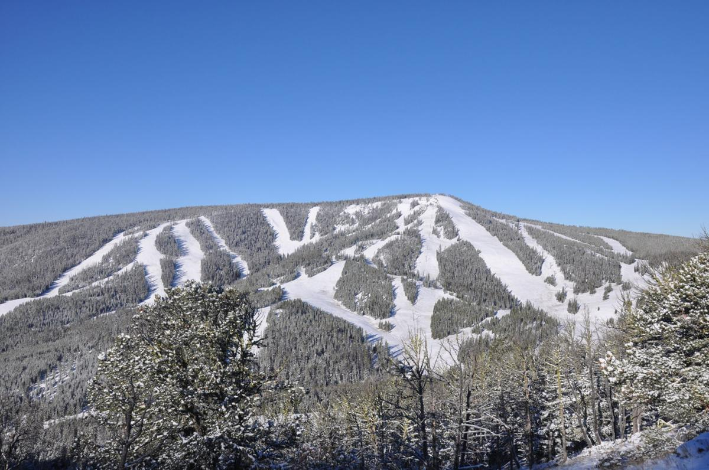

About Showdown
Showdown is an alpine ski area located in the Little Belt Mountains in Central Montana, United States. Created in 1936 and originally called King's Hill Ski Area, Showdown is a small-scale ski area that is often closed on Mondays and Tuesdays, receiving most patrons on the weekends during the season. The ski area has a base day lodge, which contains food services, ski shop, coffee shop, ticket sales, and a bar. Also located at the base is the rental shop, ski patrol, and ski school. Showdown also provides a warming hut at the top of the mountain known as the Top Rock. It has been known to serve food on busy weekends.
Why Showdown Montana
Showdown is one of the most consistent ski resorts in Montana. They constantly get huge dumps of powder with an average of 162 inches per year! Along with this, Showdown has black diamond runs on the front side, that are the most difficut runs on the mountain. Massive moguls build up throughout the year and provide difficult skiing for even the most advanced skiers. I love showdown for the cheap season passes, as well as its difficult sking and consistenttly good snow.
Learn More About Showdown: